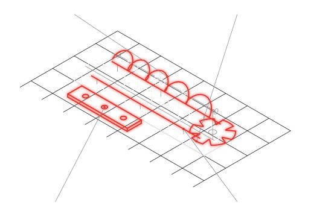

Cambio formato per macchine di confezionamento, riempimento ed etichettatura
Un set formato per ogni cliente, senza fresare il POM.
Stelle, coclee, tazze, piastre e guide di formato in PA12 sinterizzato: un file per ogni flacone, bottiglia o vaschetta del cliente, prodotto alla firma dell'ordine, da 1 a 50 set. Nessuno stampo, nessuna fresatura dal pieno, e il ricambio identico anche fra vent'anni.
1–50setprodotti alla firma dell'ordine
1fileper ogni flacone del cliente
20annie il ricambio è ancora identico
Fig. 01 — Vista isometrica
Tav. DPG-APP-FMT

01COCLEA A PASSO VARIABILE
02STELLA DI FORMATO
03PIASTRA E TAZZE
04GUIDE DI FORMATO
Set di cambio formato: stella, coclea, guide e piastra, tavola isometrica
In rosso: le parti che si producono in additive
Documento
DPG-APP-FMT
Revisione
REV. 00 · BOZZA
Lingua
IT
Editore
Due Pi Greco S.r.l.
Pagina
01 / 02
DUE PI GRECOAdditive manufacturing
Scheda applicazione · DPG-APP-FMT Cambio formato per macchine di confezionamento, riempimento ed etichettatura
01Il conto che conoscete
Come si fa oggi
Il set formato oggi nasce fresato dal pieno in POM o PA6: ore macchina per ogni stella, una coclea che è un lavoro a sé, e a ogni nuovo flacone del cliente si ricomincia. Sul parco installato il ricambio dipende da un disegno che qualcuno deve ritrovare e da un'officina che deve avere tempo.
In sinterizzazione
In sinterizzazione la stella, la coclea e la piastra sono tre file: si producono insieme, nello stesso lotto, con tasche e alleggerimenti già nella geometria. La coclea a passo variabile, che a fresa è la parte cara, qui costa quanto una dritta.
02Cosa cambia in additive
01
Il set completo in un lotto solo
Stella, coclea, tazze e guide dello stesso formato entrano insieme in macchina: un ordine, un lotto, un numero di revisione.
un file per ogni formatonessun riattrezzaggio
02
La geometria che a fresa non esce
Coclee a passo variabile, tasche di alleggerimento, canali di soffiaggio e sedi di sensore integrate nel corpo: nessun vincolo di utensile.
passo variabile e cavità interne senza sovrapprezzo
03
Ricambi a magazzino digitale
Il formato del cliente resta un file con la sua revisione: si riordina identico quando serve, anche per una macchina venduta vent'anni fa.
tracciabilità di lottoriordino identico
04
Contatto alimentare, quando serve
La PA2200 ha dichiarazione di conformità al contatto alimentare (Reg. UE 10/2011) e lavora da −40 a +80 °C sotto carico: stelle e guide sulla linea food, senza cambiare materiale.
DPG-MAT-PA2200EU 10/2011
03Materiali per il settoreRiferimenti: schede DPG-MAT e matrice DPG-CAT
Materiale
Processo
Perché qui
Riferimento
PA2200 (PA12)
SLS
il materiale del formato: rigido, tenace, contatto alimentare, da −40 a +80 °C sotto carico
DPG-MAT-PA2200
Nylon 12CF
FDM
guide lunghe e piastre dove serve rigidità estrema a peso minimo
matriceDPG-CAT §01
TPU 90A
SLS
inserti cedevoli di stella e tazza per il contenitore delicato; contatto pelle, non prodotto
matriceDPG-CAT §01
In produzione, oggi
Per un costruttore di forni professionali produciamo in serie ricorrente cassetti e profili raccogligocce in PA2200: componenti a contatto con il prodotto, pareti da 2,5 mm, riordinati in lotti piccoli, lotto tracciato. Non un prototipo: una fornitura.
Il rovescio — quando non conviene
Sopra i volumi da stampo, torna lo stampo, e vi aiutiamo a fare il passaggio. Le stelle che lavorano sul vetro ad alta cadenza vanno provate sul vostro banco prima di sostituire il POM: l'usura della PA12 si valuta sul pezzo, non a catalogo. E l'alluminio resta alluminio dove serve rigidità di macchina.
Mandateci lo STEP di un set formato. Vi diciamo anche quando non conviene.